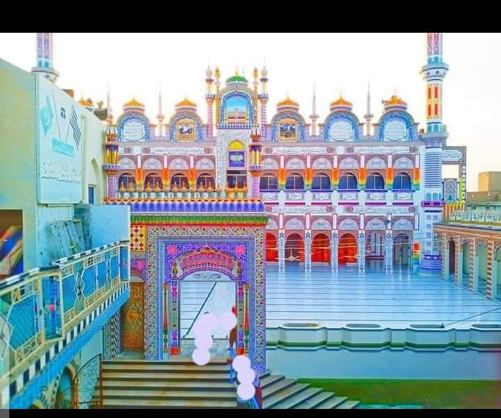
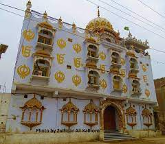

Madersa Dar-ul-Fuiz

Mandir

Dargah: Jumman Shah
Kandhkot, a culturally diverse city in Sindh, Pakistan, is home to several religious places that reflect its rich heritage. The city has numerous masjids (mosques) where the Muslim community gathers for prayers and spiritual activities. Additionally, Kandhkot is known for its mandirs (Hindu temples), which serve as important centers for worship and cultural events for the Hindu community. These sacred spaces symbolize the harmony and coexistence of different faiths in the region.